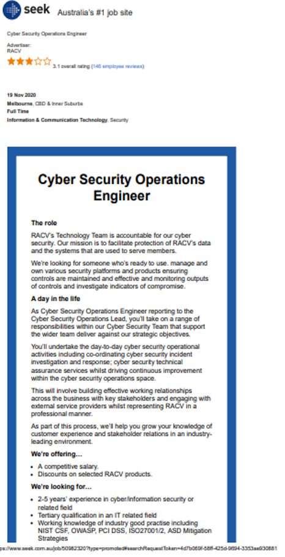
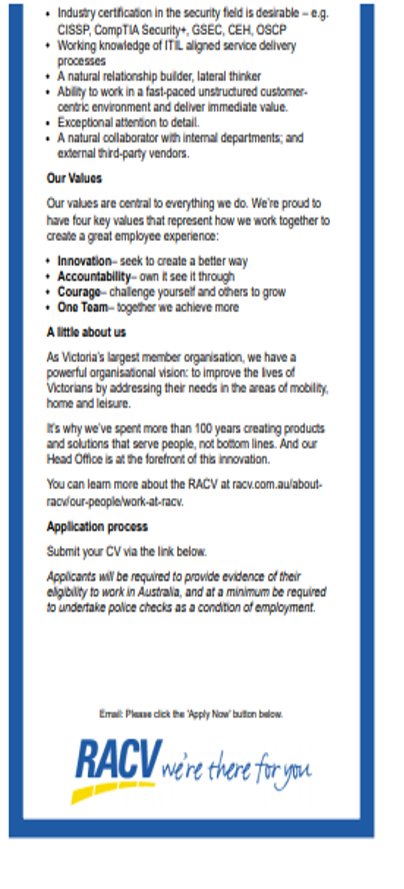

Myer-Briggs test

Name: Kanav Atri
Student number: s31****
Student email address: s31*****@student.rmit.edu.au
Highest level of education: Associate Degree in Engineering Technology (Design and Development)
Work Status: Working full-time with a telecom organisation.
I was born in the city of Jammu, Jammu and Kashmir, India and spent most of my childhood and teenage years growing up in a joint family. I finished my high school in 2006 and decided to move abroad for higher studies, this was not an easy decision as I had never stayed away from my family even for a month so, moving to a new country all together was something which was quite a huge thing and at first my parents did not agree however after I kept insisting, they finally agreed to send me abroad. Next step was to choose a University and city that was not too far from my hometown and I could easily fly back and forth when needed. While going through a list of all the good universities I came across an advertisement regarding a seminar conducted by IDP Australia which represents Australian universities overseas and assists students with enrolments and all visa related paperwork. I decided to attend one of their sessions after discussing it with the representative/education consultant who explained me the process in detail we decided that R.M.I.T would be a good choice for my engineering degree. In 2007 December I moved to Melbourne as an international student. The first few years were quite hard however I managed to survive, and overtime fell in love with the city of Melbourne and decided to stay here. I also my met my partner here in Melbourne through a common friend. It has been over 13 years since I moved here and Melbourne has always been my home away from home. An interesting fact about myself: I was an on-campus R.M.I.T student back on 2008, I was also the president of RMIT Indian club and a member of R.M.I.T Student Union.
I.T has always been an important part of my life. I can still remember attending computer classes back in secondary school always excited me and I always looked forward to learning more about computers and how they work.
My interest is in Cyber security and AI. I find both these fields very fascinating and especially in todays era where cyber threats, robotics etc have become a part of our day to day lives and there is not even a shred of a doubt in my mind that these two fields will shape our future.
Even though I have been interested in IT from my school days my interest in Cyber security an AI started back in 2019 after I started working in the Telcom industry
It is one thing to read and learn about I.T but when you a get a chance to experience how it works in real world that is a completely different experience and the exposure to the real-world scenarios is just mind-boggling.
Cyber security, AI and automation is an important part of our business and every year we invest heavily in these areas. We have already introduced biometrics and it is already in use.
Let us look at cyber security as an example:
Demand of Cybersecurity has almost increased drastically over the last few years. As per a research conducted, 40% businesses say they do not have measures in place to defend against attacks. February 2018, the Federal Government requires all businesses with more than $3 million turnover to report any data breaches or face fines of up to $1.8 million
Our company is planning on launching a range of cyber security packages to help clients with protection against viruses, malware/spyware, hackers, phishing and general threats to their company, employees, and customer data and the demand is just going keep increasing with time.
As a former R.M.I.T student I always had this connection with R.M.I.T even after graduation. Back then R.M.I.T was my home away from home as I spent most of my time there and made lifelong friends during my studies.
Choosing R.M.I.T was not a hard decision, In the area of engineering and technology, R.M.I.T has a well-established name in the education sector.
In fact, I always knew that whenever I would get a chance to go back to studying R.M.I.T will always be my first choice.
During my studies I expect to learn programming languages being used currently in the industry like Java, python etc as well to learn more about cyber security, ICT, AI etc. I would use the skills learnt to find a role and work in the I.T sector within my company.


This advertisement is for a position of Cyber Security Operations Engineer reporting to the team leader. The role involves responsibilities such as protecting data as well as the systems that the company uses to service its customers or clients. This may include their personal information, credit card details etc. This role also requires working with internal stake holders and requires co-ordinating investigations related to cyber security incidents and provide necessary response based on the type of incident that taken place.
I find this position very appealing as it is exactly what I would like to work as in future. This role involves identifying cyber threats and responding to security breaches. Identity theft and privacy breach has become very common with businesses that manage customer information like credit details, personal information etc. This role will give me the exposure required to learn and prevent such breaches as well the skills required to respond to such threats in real world situations. This role will also give me the experience that I could use in future roles within or outside the organisation to learn more about penetrating testing.
If I have to summarise above job advertisement, below are the reasons why I believe that these positions are so much in demand and the type of work that is required or expected from cyber security analysts.
Why I think it is in demand?
1. Data breaches cost millions
2. Organisations and people in general are concerned about data
3. Growing cyber crime
4. Growth in business data
5. Blockchain & the internet of finance
6. Growth in online retail
7. Growth in cloud computing.
What sort of work I believe is done in the Cyber Security field?
1. Evaluate an organisations security needs
2. Penetration testing
3. Identify and resolve vulnerabilities in systems and networks
4. Assist in security breach investigations
5. White hat or ethical hacking
To be a potential successful candidate for this position, as per the advertisement it requires basic I.T or Computer science qualification as well as list of skills and one or more certifications. It requires a working knowledge of the industry and a good practice including:
1. NIST (National Institute of standards and Technology) CSF (Cyber security framework) - is a framework with set of guidelines for private sector companies to be better prepared in identifying, detecting, and responding to cyber-attacks. It also includes guidelines on how to prevent and recover from attack.
2. OWASP (The Open Web Application Security Project) - on online community that produces free, publicly available articles, methodologies, documentation, tools, and technologies in the field of web application security.
3. PCI DSS (Payment Card Industry Data Security Standard) - It is an information security standard for organizations that handle branded credit cards from the major card schemes.
4. The PCI Standard is mandated by the card brands but administered by the Payment Card Industry Security Standards Council. The standard was created to increase controls around cardholder data to reduce credit card fraud
ASD Mitigation Strategies - The Australian Cyber Security Centre (ACSC) has developed prioritised mitigation strategies to help cyber security professionals in all organisations mitigate cyber security incidents caused by various cyber threats. This guidance addresses targeted cyber intrusions (i.e., those executed by advanced persistent threats such as foreign intelligence services), ransomware and external adversaries with destructive intent, malicious insiders, ‘business email compromise’, and industrial control systems.
The role as mentioned above also may require one or more industry certifications:
1. CISSP (Certified Information Systems Security Professional) -Earning the CISSP may demonstrate that one has what it takes to effectively design, implement, and manage a best-in-class cybersecurity program. CISSP may help to validate the expertise.
2. CompTIA Security+ - CompTIA Security+ is a global certification that validates the baseline skills you need to perform core security functions and pursue an IT security career.
3. GSEC -The GIAC Security Essentials (GSEC) certification validates a practitioner's knowledge of information security beyond simple terminology and concepts. GSEC certification holders are demonstrating that they are qualified for hands-on IT systems roles with respect to security tasks.
4. CEH -Certified Ethical Hacker certification, is a qualification obtained by demonstrating knowledge of assessing the security of computer systems by looking for weaknesses and vulnerabilities in target systems, using the same knowledge and tools as a malicious hacker, but in a lawful and legitimate manner to assess the security posture of a target system.
5. OSCP - Offensive Security Certified Professional (OSCP) is a certification program that focuses on hands-on offensive information security skills. It consists of two parts: a nearly 24-hour pen testing exam, and a documentation report due 24 hours after it.
Working knowledge of ITIL aligned service delivery processes - ITIL service delivery occurs when an organization performs an IT service for a customer that meets two criteria: First, it should produce an outcome that the customer values. ... Services are designed, deployed, delivered, improved, and retired by using the ITIL framework
Besides above-mentioned requirements some other certifications/skills that I believe may prove to be beneficial for this type of role or this role in particular would be
1. CCNA 2020
2. LINUX
3. COMP TIA Network +
4. MSCA windows server 2016
5. COMP TIA LINUX +
6. CYSA+
7. COMP TIA Pen Test+
Currently, I have an experience working under high pressure corporate environment. I have been working with major telecom organisation for a few years and have gained skills and experience to work effectively under difficult situations and achieve required targets.
I am also aware of the risks involved with breach of customer’s personal information and have had trainings on regular basis to learn more about these breaches which includes identifying identity theft, cyber threats etc and have gained skills on how to respond and manage them effectively to prevent any further damage.
I may not have experience in the I.T sector or hold any qualifications that would help me secure a job in the field however I am fortunate enough to have a mentor within the organisation who looks after the department responsible for preventing and managing security threats and breaches, this person is also my first point of contact regarding any queries I may have about an I.T role or recent changes within the I.T sector this would also help me with my transition into an I.T role with in the business in future.
To obtain or gain above mentioned skills there are certain steps that I believe I would need to take to obtain desired certifications, I also believe that these skills and certifications will prove to be quite useful with other prospective employers. The steps are as follows.
1. To complete the undergraduate degree that I have undertaken and specialise in units that would help me master skills required in the cyber security industry and help me clear certifications such as CompTIA Security+, CEH, OSCP etc.
2. To prepare and clear examinations that would help to earn above certifications.
3. To make myself familiar and to get involve with NIST, OWASP, PCI DSS, ISO 27001 guidelines etc and obtain memberships if required = to stay updated with latest updates and changes within the industry.
In addition to above mentioned steps, I would also need to stay updated with latest updates within the industry, learn from those who are currently working in the cyber security field and stay informed with latest changes and requirements.


What do the results of these tests mean to me?
These results will help me measure how well I’ll perform based on my interpersonal skills, the motivation and inspiration that drives me and areas that can be improved and require attention.
How these results might influence my behaviour in the team?
These results are based on my interpersonal skills. To better perform with in the team, I would focus on the positives and work on improving the negatives. This will help not only help to increase productivity within the team but also help me to avoid potential conflicts within the team.
How should take these factors into account when forming a team?
This is a tricky question; I can look for people with similar attributes to avoid conflicts or difference of opinion however in real world situation we do not always get people that are like us and that share similar opinions as us. The key here is to learn to adapt and to be able to fit into the team and deliver the results expected of you. This will not only provide me the skills to work with people from different background but also teach me the important lessons to work under pressure.
There have been several debates on introduction of A.I into cyber security through machine learning algorithms, idea behind these debates is that A.I will not only be able to quickly detect or identify vulnerabilities in the system but also eliminate any potential attack. Conversely, concerns have also been raised that introduction of A.I in offensive hacking may make it extremely difficult to prevent or block any such attacks, moreover A.I itself is not secured to such attacks.
The idea of this project is to develop a software or system that would reduce the risk any such attacks on A.I and prevent misuse.
Artificial intelligence has become such an important part of our lives and with so many organisations moving towards automation and AI it has become a necessity to have measures in place to protect this technology from offensive cyber-attacks. There are countless examples of attacks by hackers to steal valuable data and introduction of AI in cyber security has its benefits but at the same time it can make it a lot harder to prevent attacks on AI unless we have a technology in place that can prevent such attacks and manipulation of AI for financial or another gains.
Despite the demand, some businesses are still reluctant to use machine learning based systems due to security risks involved that is why it is important to have system that will assure them the security of their data so they can focus on the benefits instead.
According to a global study, consumers are optimistic about the benefits of AI, they also express fear and confusion about how businesses use AI to engage them today. Below shows results of the some of the results of the study
The study started by asking them basic questions about AI to understand how much consumers know about AI. The results below clearly show the knowledge gap and how less consumers actually know about AI.


These consumer fears may be misguided. That is because the majority of respondents are already using AI- powered devices and services today – they just do not know it.
Only 34 percent of respondents think they have interacted with some sort of AI technology in the recent past. But when asked about the technologies they use in their daily lives, it reveals a much different story. The survey found that 84 percent had recently used at least one AI-powered service or device – such as virtual home assistants, intelligent chat bots, or predictive product suggestions. That is a knowledge gap of 50 points. If you have used Google or even spam filters, you have perhaps unknowingly experienced the benefit of AI in some form.
Consumers were then asked if they would be more open to AI if it helped them in their daily lives, such as saving them time or money. Framed with the benefit front and canter, we saw a much more positive response. Nearly 70 percent agreed that AI would be beneficial in these situations.


The above data clearly shows the importance of AI and how rapidly the demand is increasing .With the increase in demand the probabiolity of risks invovled will increase aswell and so will the need to protect and eliminate the risks .
Our product will work on eliminating these valunarbilities and risks to provide these business a piece of mind .It will ensure that the data is protected and AI is not misused or manupilated in anyway by hackers looking to gain a financial or any other adventage.Follwing are some of the features of this product :
There are several skills that i might require to learn before I can even start working on this project.Some of the skills are as follows.
1. Programing language : Experience with programing language is a must .Some of the programing lanugages that might help are :Python,Java,JavaScript,C++ etc.
2. Data engineering : Knowdge to store raw data gerated by systems
3. Able to perform exploratory data analysis.
4. Models: Proficent in machine learning algorithms and the knowdge of when to apply them.
5.Security skills etc.
As the demand for AI/machine learning is growing so is the risks associated. This product will ensure that the risks associated are reduced to a level where businesses and consumers can safely and fearlessly step into the world of machine learning which will have a massive impact on our future and on I.T.